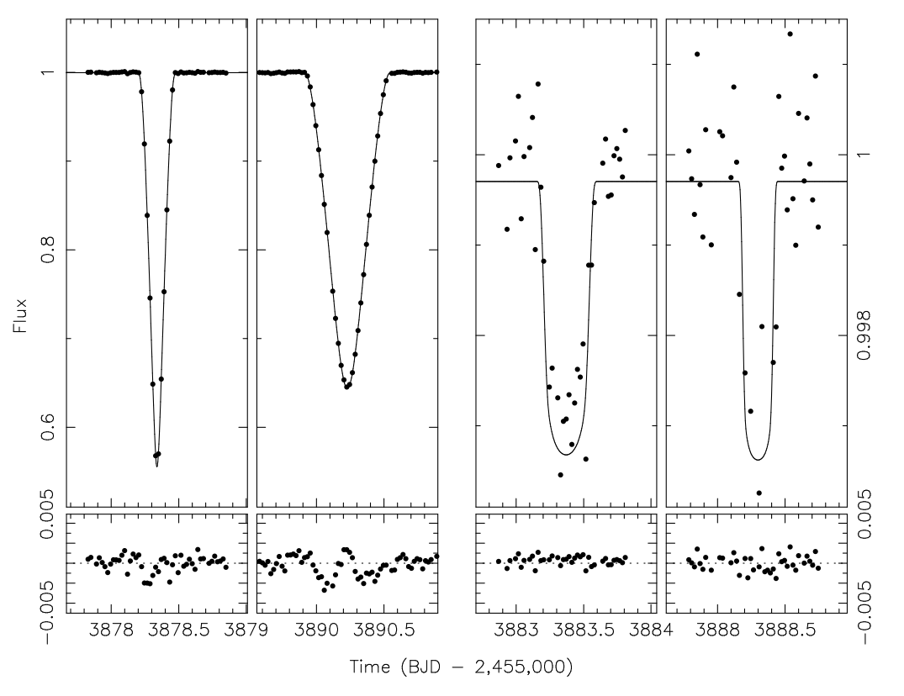
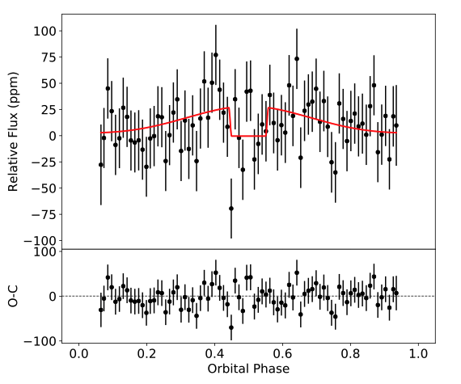

STATUS UPDATE: Orbit 1 of Sector 38 is now available to download as a TICA product from MAST
Welcome TESS followers this weeks news bulletin in which we look at three papers from the archive,
TIC 172900988: A Transiting Circumbinary Planet Detected in One Sector of TESS Data (Kostov et. al., 2021) :
In this paper the authors report on the discovery of a transiting circumbinary planet,TIC 172900988b, detected using TESS Sector 21 data. The planet is part of a binary star system, and was first seen to transit the primary star and then five days later the secondary star. The binary system is also eclipsing with a period of 19.7 days and an eccentricity of 0.45.
Utilizing data from ASAS-SN, Evryscope, KELT, and SuperWASP, the authors found a prominent apsidal motion of the binary orbit, caused by the dynamical interactions between the binary and the planet. On combining these data with that from TESS the authors derived the mass and radii of the primary star as 1.2377 MSun and 1.3827 RSun respectively, with the mass of the secondary as 1.2021 MSun and its radius as 1.3141 RSun. The radius of the planet was calculated as 11.07 REarth, for the mass and orbital period a range of values were found - 822 < M3 < 981 MEarth, and 188.8, 190.4, 194.0, 199.0, 200.4, or 204.1 days.
TKS X: Confirmation of TOI-1444b and a Comparative Analysis of the Ultra-short-period Planets with Hot Neptunes (Dai et al., 2021) :
Using TESS data the authors discovered a super-Earth on a 0.47 day orbit around a Sun-like star, this planet was named TOI-1444b and has a radius of 1.4R⊕. Using radial velocity (RV) measurements from Keck/HIRES the planet was confirmed and its mass derived as 3.87 M⊕. A possible non-transiting planet with a mass of 11.8 M⊕, may also be present in the system and was indicated by the RV measurements. The authors may also have detected a phase curve variation and secondary eclipse of TOI-1444b via the TESS data.
Including this object there are only 17 ultra-short period (< 2R⊕; USP) planets with well measured masses and sizes, and as such the authors present a detailed examination of the small sample and compare it to that of sub-day ultra-hot Neptune class (>3R⊕, >2000F⊕ - TOI-849 b, LTT9779 b and K2-100; ). The authors find the following:
-
USP's have predominantly Earth like compositions with inferred iron core mass fractions of 0.32. Ultra-hot Neptunes have H/He or other volatile envelopes.
-
USP's have masses below the threshold of runaway accretion, ultra-hot Neptune's are above.
-
USP's are found in multi-planet systems with a secular interaction formation scenario. Ultra-hot Neptune's tend to be "lonely" planets.
-
USP's occur around solar-metallicity stars. Ultra-hot Neptune's tend to have higher metallicity hosts.
-
Ultra-hot Neptune's are more like hot Jupiters than USP planets.
NGTS-19b : A high mass transiting brown dwarf in a 17-day eccentric orbit (Acton et al., 2021) :
In this paper the authors present the discovery of a high-mass transiting brown dwarf known as NGTS-19b and discovered by the Next Generation Transit Survey (NGTS). Using data from TESS (sector 11), the South African Astronomical Observatory, and the CORALIE spectrograph, the authors derive the characteristics of the system.
The host star of the NGTS-19b system is a K-star, with a mass of 69.5 MJup and a radius of 1.034 RJup, with a period of 17.84 days, and an eccentricity of 0.3767. Given the mass and radius of the brown dwarf the authors estimate the age of the system to be 0.46 Gyrs, but this is not consistent with the age determined from the host star SED, indicating that the brown dwarf might be inflated. Inflation of the brown dwarf however would be difficult and unusual given its mass and the low levels of irradiation.

Fig. 1: Taken from Kostov et. al., (2021). The TESS data for the primary eclipse, the secondary eclipse, the planet transit of the primary, and the planet transit of the secondary. Also shown are the best-fitting model, along with the residuals of the fit.

Fig. 2: Taken from Dai et. al., (2021).The phase-folded and binned out-of-transit flux variation of TOI-1444 b in TESS observation, The red curve shows the best fit phase curve and secondary eclipse model.